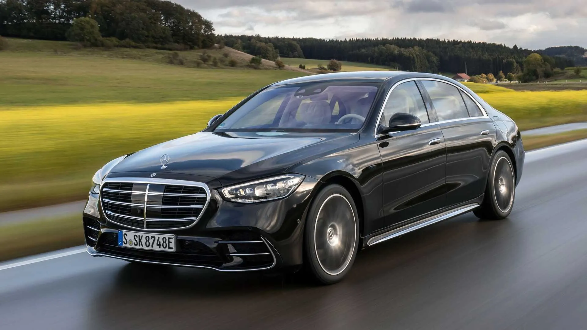
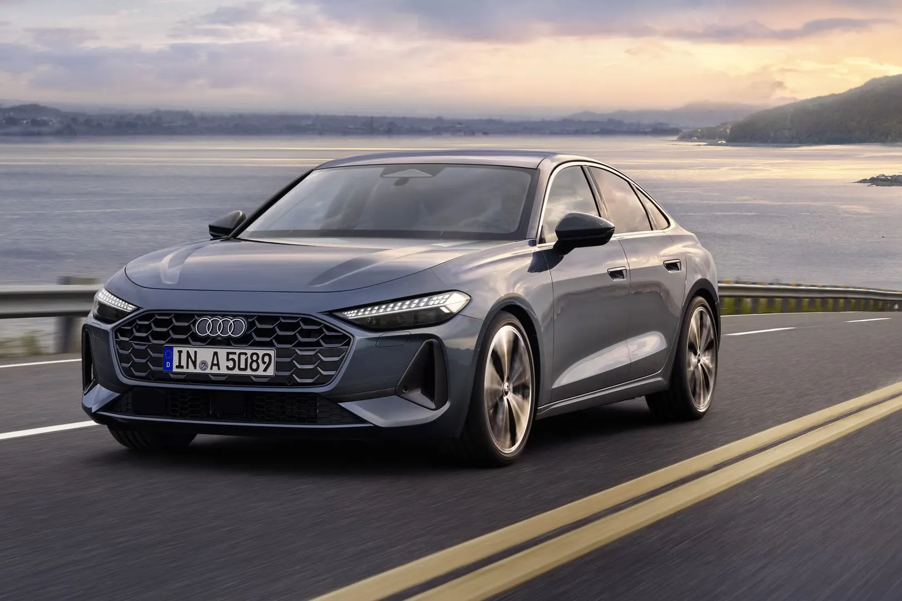
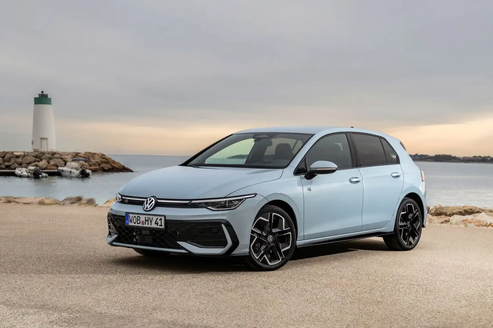
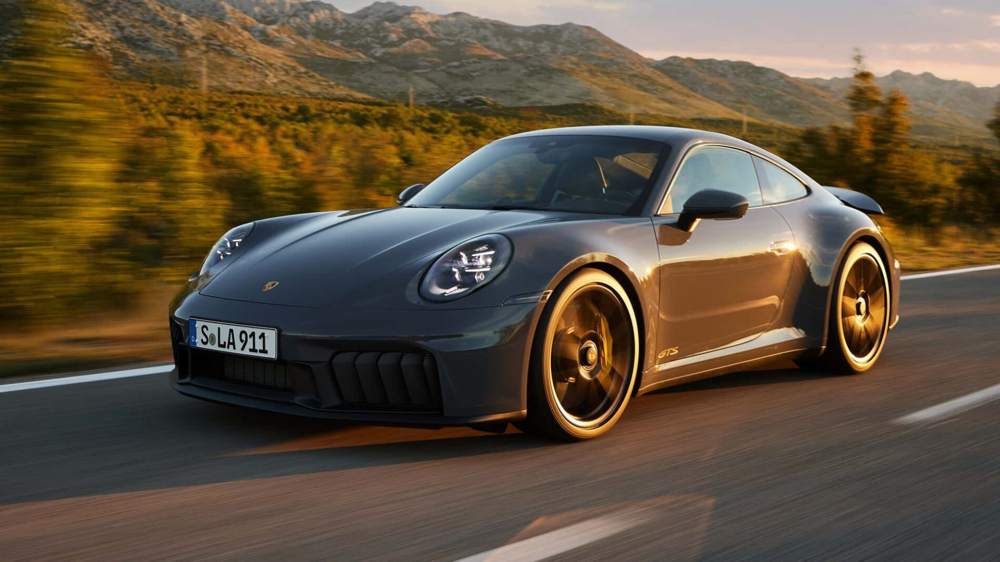

BMW
BMW – Je známa svojimi športovými autami a výbornými jazdnými vlastnosťami.

Mercedes-Benz
Mercedes-Benz – Vyrába luxusné autá, ktoré sú známe pohodlím a bezpečnosťou.

Audi
Audi – Je známa moderným dizajnom, kvalitným spracovaním a technológiami.

Volkswagen
Volkswagen – Vyrába spoľahlivé a praktické autá pre každodenné používanie.

Porsche
Porsche – Je známe svojimi výkonnými športovými a luxusnými autami.

Opel
Opel – Vyrába cenovo dostupné a praktické autá pre rodiny aj jednotlivcov.